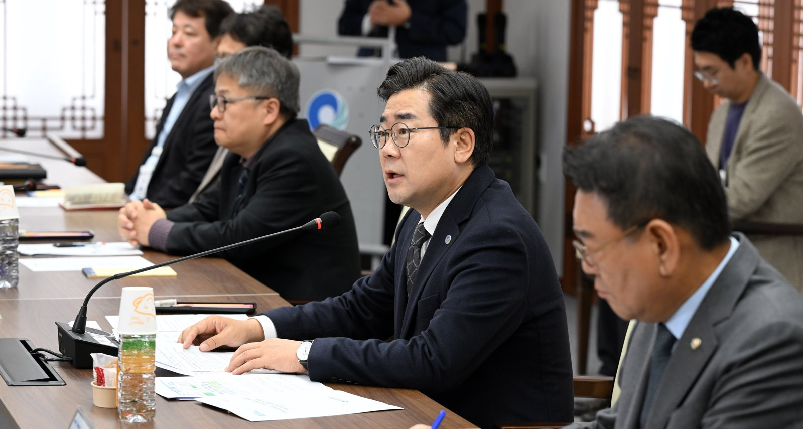

청라연장선 시공사 경영진 간담회, 발표에 없는 새 개통 시점
착공 때 2027년 개통 목표, 교체 전동차 8편성 협의
AI경제저널=김갑봉 기자 | 인천시(시장 박찬대)가 서울7호선 청라국제도시 연장선 시공사·건설사업관리단 최고경영진과 공정회복 간담회를 열었다고 12일 밝혔다. 시청 장미홀 간담회에는 김교흥·이용우 국회의원과 공사 관계자 대표 등 13명이 참석했다. 새 개통 시점은 이날 발표에 없었다.

현장을 넘어 시공사 본사에 인력·장비 요구
참석자들은 공사 현안과 공정별 추진 여건을 함께 살폈다. 현장 대응을 넘어 시공사 본사 지원과 의사결정이 필요하다는 데 뜻을 모았다고 시는 밝혔다.
논의한 것은 넷이다. 시공사별 공정 관리체계, 핵심 공정의 인력·장비 적기 투입, 공정 간 연계, 현장 애로 해소다.
박찬대 인천시장은 "각 시공사는 현장에 국한된 대응에서 벗어나 총역량을 결집하여 필요한 모든 지원과 조치를 적극적으로 이행해 달라"고 말했다. 이어 "어떠한 상황에서도 시민의 안전은 양보할 수 없는 가치"라고 했다.
김교흥·이용우 의원은 개통 지연을 걱정하는 지역사회 목소리와 주민 기대를 전했다고 시는 밝혔다.
2027년 개통 목표에서 정상화 추진까지
청라연장선은 서울7호선 석남역에서 청라국제도시를 거쳐 공항철도 청라국제도시역까지 잇는 10.767㎞ 노선이다. 시는 2022년 3월 23일 착공식을 열고 2027년 적기 개통을 목표로 내걸었다. 착공 때 총사업비는 1조5739억원이었다.
시는 2023년 7월 추가역(돔구장역)을 새로 지어도 기존 7개 역은 2027년에 먼저 연다고 발표했다. 추가역 개통은 2029년 3월로 잡고, 정부와 총사업비 조정을 협의한다고 했다. 그때 공정률은 11.89%였다.
시는 지난 2월 2022~2029년 총사업비를 1조6322억원이라고 밝혔다. 착공 때보다 583억원 많다(AI경제저널 계산).
주민들은 올해 6월 22일 주민설명회와 7월 2일 범시민대책위원회, 7월 11일 주민간담회에서 공기 지연 문제를 잇따라 제기했다. 박 시장은 7월 11일 간담회에서 감사로 지연 원인을 밝히겠다고 했다.
시는 8월 12일 국회의원·시의원·주민대표·전문가·공무원 36명으로 민·관·정 협의체를 꾸렸다. 다음 날에는 주민 18명이 시민감시단으로 첫 회의를 열었다.
시는 지난 3일 정상화 추진 상황을 밝혔다. 협의체 출범 뒤 공정점검 태스크포스 8회, 협의체 13회, 관계기관 협의 21회, 국회의원 간담회 12회를 열었다.
전동차는 새로 만들어서는 제때 들이기 어렵다고 시는 판단했다. 시는 서울교통공사가 교체할 전동차 8편성을 청라연장선에 쓰려고 관계기관과 협의하고 있다. 일찍 투입할 운용차 최소 3편성도 따로 협의 중이다.
간담회가 청라 주민에게 말하는 것
시 발표에서 짚을 것은 넷이다.
시는 7월부터 정상화를 추진해 왔다. 그러나 3일 발표와 12일 간담회 발표 모두 새 개통 시점과 지연 기간, 지금 공정률을 밝히지 않았다. 7월에 밝힌 감사 결과도 두 발표에는 나오지 않는다.
한승헌(연세대 사회환경시스템공학부) 등 연구진은 2006년 대한토목학회논문집에 경부고속철도 공기지연 분석을 실었다. 연구진은 공기가 늦어지면 추가 비용이 생겨 사업비가 늘고, 발주자와 시공자 사이 분쟁의 주요 원인이 된다고 밝혔다.
시는 3일 공기 단축에 드는 추가 재원과 국회 예산 심사 공동 대응을 논의했다. 협의체 재정행정지원분과는 계약 분쟁 해소를 맡았다.
시는 2022년 6월 인천1호선 검단연장선과 청라연장선 전동차 8편성 64량을 한데 묶은 제작 사업의 낙찰자로 다원시스를 정했다. 지금은 서울교통공사 교체 차량에 안전검사와 개조를 거쳐 들이는 길을 찾는다.
시는 2022년 착공식에서 청라연장선이 열리면 청라~구로 이동이 78분에서 42분으로 36분 준다고 내다봤다. 개통 전까지 시는 시내버스 증차와 광역급행버스(M버스) 신설을 검토한다. 간선급행버스체계(BRT) 임시 노선과 유도고무바퀴시스템(GRT) 확대도 검토 대상이다.
시는 협의체와 시민감시단 활동 결과를 시 누리집에 공개하고, 정상화 대책을 최종 수렴한다는 방침이다.
참고문헌
- "대형 건설사업의 공기지연분석: 경부고속철도 건설사업을 중심으로", 한승헌·윤성민·이상헌, 「대한토목학회논문집」 26권 5D호 839~848쪽, 2006, https://www.koreascience.kr/article/JAKO200630335056409.page
- "인천시·지역 정치권·시공사, 서울7호선 청라연장선 공정회복 '원팀' 공조", 인천광역시 도시철도건설본부, 2026.11.12, https://www.incheon.go.kr/IC010205/view?repSeq=DOM_0000000015954826
- "인천시, 서울7호선 청라국제도시 연장사업 대책 마련 총력", 인천광역시 도시철도건설본부, 2026.11.03, https://www.incheon.go.kr/IC010205/view?repSeq=DOM_0000000015883639
- "인천시, 서울7호선 청라 연장 정상화 위한 '민·관·정 협의체' 출범 회의", 인천광역시 도시철도건설본부, 2026.08.12, https://www.incheon.go.kr/IC010205/view?repSeq=DOM_0000000015319793
- "인천시, 서울7호선 청라 연장사업 '시민감시단' 첫발… 현장 중심 소통 행정 본격화", 인천광역시 도시철도건설본부, 2026.08.14, https://www.incheon.go.kr/IC010205/view?repSeq=DOM_0000000015327289
- "인천시, 서울도시철도7호선 청라국제도시 연장사업 정상화를 위한 '민·관·정 협의체' 출범… 공기 단축 및 투명성 제고 총력", 인천광역시 도시철도건설본부, 2026.07.22, https://www.incheon.go.kr/IC010205/view?repSeq=DOM_0000000015183733
- "인천시, 서울7호선 청라연장 관련 주민간담회 개최", 인천광역시 도시철도건설본부, 2026.07.11, https://www.incheon.go.kr/IC010205/view?repSeq=DOM_0000000015129923
- "인천시, 청라연장선 건설사업에 지역업체 참여 확대 나선다", 인천광역시 도시철도건설본부, 2026.02.26, https://www.incheon.go.kr/IC010205/view?repSeq=DOM_0000000014236078
- "인천시 서울7호선 청라연장선 추가역 신설해도 27년 개통", 인천광역시 도시철도건설본부, 2023.07.24, https://www.incheon.go.kr/IC010205/view?repSeq=DOM_0000000008060595
- "인천시, 전동차 통합 발주로 검단·청라연장선 청신호", 인천광역시 도시철도건설본부, 2022.06.01, https://www.incheon.go.kr/IC010205/view?repSeq=DOM_0000000004889903
- "석남에서 청라가는 도시철도 7호선 연장, 첫 삽 떴다", 인천광역시 도시철도건설본부, 2022.03.23, https://www.incheon.go.kr/IC010205/view?repSeq=DOM_0000000004387600
[사진 출처]
- [사진1] 인천시 인천인터넷방송 포토시정 「서울도시철도7호선 청라국제도시 연장 건설공사 인천시-건설사업관리단·시공사 간담회」(2026.11.12) https://www.incheon.go.kr/intv/TV010201/3094609
관련기사
- 인천도시철도 무임승차 4년 새 78.7% 증가…못 받은 운임 533억원
- 제5차 국가철도망 13일 의견수렴, 지방정부 건의 600조원
- 부평·주안 국가산단 재생에 341억원…주차 493면 확충
- [해양 AI 융복합⑭] 항만 자동화 앞 '보호 대책 먼저' 요구한 항운노련과 해외 항만의 생산성 이득 공유
저작권자 © AI경제저널 무단전재 및 재배포, AI학습 및 활용 금지